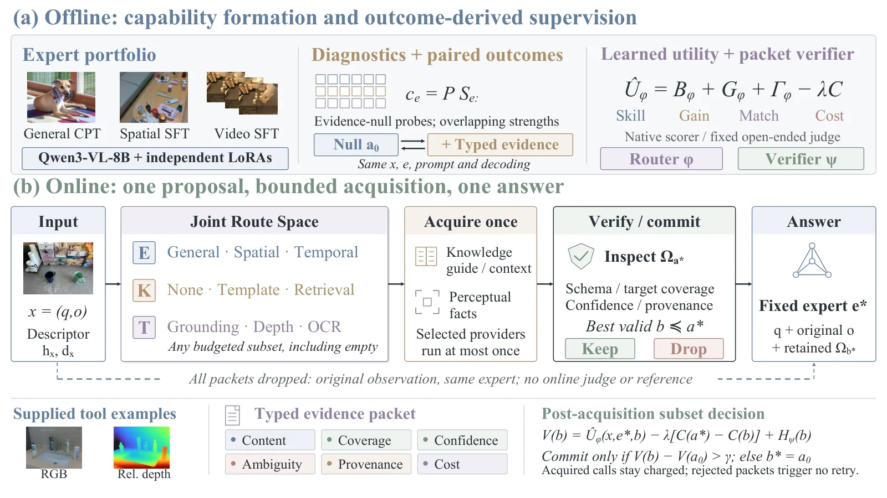

EKT-Router：具身视觉语言模型中的专家—证据对齐路由
EKT-Router: Expert-Evidence Alignment for Embodied Vision-Language Models
把“选哪个专家”和“给它什么证据”合成一个受限路由：三份 Qwen3-VL-8B LoRA 专家 + 三类工具，先按结果导出的能力签名与交互项打整条路径的分，再在拿到数据包后按“相对不用证据的增益”决定收不收；六基准均分 61.4，关掉全部外部证据后仅靠路由仍比最佳固定专家高 1.75 分。
embodied QA mean
routing-only gain
router ablation
trainable params
作者、单位与技术谱系 · Research context
作者与单位
研究脉络
- LoRA（Hu et al., ICLR 2022）与 MoLE/MoME 路由式适配方法基座关系：提供“冻结主干 + 低秩适配器”的参数高效 specialization；本文把“选哪个适配器”升级为“选适配器 + 选它消费的证据”。[论文 §2]
- RouteLLM / Route-to-Reason（带预算的模型/策略路由）方法上游关系：把“按查询选模型/推理策略并计成本”形式化为偏好学习问题；本文沿用偏好学习式路由，但把动作空间扩展到知识检索与工具子集。[论文 §2 与 §3.4]
- MASER（Raj & AV, 2026）空间问题适配器路由最接近的同期工作关系：同样在具身骨干上按空间问题路由模态适配器；本文的差别是把“外部证据”也纳入同一条路径评分，并加了获取后的校验。[论文 §2 与 §4.3]
合作网络
- CUHK ↔ Knowin.AI（共同署名/双隶属）The Chinese University of Hong Kong → Knowin.AI关系：共同署名：多位作者同时标注高校与企业双隶属[论文首页署名]
- CUHK ↔ HKUST(GZ)/HKUST（共同署名）The Chinese University of Hong Kong → HKUST(GZ) / HKUST关系：共同署名：Yingjie Xu、Harold Haodong Chen、Ying-Cong Chen 跨机构署名[论文首页署名]
- EKT-Router 证据通道 → Grounding DINO / Depth Anything V2 / OCREKT-Router → Grounding DINO、Depth Anything V2、OCR关系：明确技术依赖：三类感知 provider 即这些现成模型[论文 §4.1 与附录 C.1]
作者单位与通讯标注来自论文首页；“团队前作/最接近工作”的判断基于引用与作者重合，属有来源的解读。论文未给出作者个人主页链接之外的机构关系，本文不推断师生或实验室隶属。附录 B.3 明确承认 Γ 与校验器未被单独消融，这一点已写入局限。
方法本质拆解 · What actually changed
是不是微调？
是“先独立适配、再冻结拟合控制器”的两段式，而不是端到端微调。三份 LoRA（rank 128、scale 256、dropout 0.05、AdamW、两轮、学习率 1e-4）分别训练后全部冻结；路由与校验器只在这之上用 1,020 条拟合、180 条留出的媒体不相交切分训练，参数约 1.245M。作者专门对比过联合训练：联合端到端 57.1、联合更新专家 56.2，都低于冻结专家的 60.2，原因是更新专家会让路由的排序目标漂移。
有没有额外约束？
有预算与结构两类硬约束。预算侧：工具子集必须满足 C_T(S)≤B_T，部署菜单下最多 4 次 provider 调用、16 个待评子集、恰好 1 次答案生成。结构侧：Γ 被强制跨专家中心化（Σ_e Γ=0），G 与 Γ 与 H 在 null 动作处锚定为 0，校验器只在“已选路径的子集”上工作、不能改专家。这些约束把“无界 agent 循环”排除在外，也使空证据回退在数学上精确成立（b*=a0 时回答条件退化为 p(q,o)）。
推理/后端到底做了什么？
一次描述子前向（冻结 Qwen3-VL-2B）+ 一次路由打分（对所有离散元组，不生成答案）+ 每个被选 provider 至多一次调用 + 一次子集校验 + 一次答案生成。校验器不打分候选答案，只看数据包属性与预测残差，因此不会出现“先生成再看”的额外开销；若没有子集能超过 null 边际 γ，就保留空集、用同一专家在原始观测上回答。全流程没有迭代循环，也没有跨轮记忆。
方法本质是什么？
本质是把“能力选择”和“证据获取”的耦合显式写进一个可分解的效用函数：B 是专家单独作战的能力、G 是证据的通用价值、Γ 是“这份证据对这个专家额外值多少”。训练信号不是人工标注的路由标签，而是同一输入下不同路径的真实答题得分差（偏好对 + 增益校准），所以签名与效用都是从结果反推的。它改变的不确定性是“该不该为这条查询付证据成本、付了之后值不值”；它没有做的是多轮主动感知、把效用扩展到动作成功率，以及证明 Γ 与校验器各自的独立因果贡献（作者在附录 B.3 明确承认这点）。
输入问题+部分观测+三份冻结专家；用结果导出的能力签名与专家×证据交互项给整条路径打分；拿到数据包后按“相对 null 的增益”决定收不收；直接效果是在有界调用内把专家与证据配对，且永不低于无证据基线。

桥接价值Bridge
桥接价值
它的结构可以原样搬到多传感器/多前端融合上：把“选哪条估计链路”和“给它哪一路观测”当成一个联合决策，而不是两个独立开关。更重要的是它把“拒绝所有外部证据”做成了精确可回退的 null 路径——任何门控设计里最危险的情况是“加了东西反而更差”，这里从结构上排除了。对可靠状态估计来说，这等价于一个带空动作的、可审计的门控：每个决策都能记录选了谁、为什么、拿到了什么、最后收没收。
方法与模块Method
方法摘要
离线先做三份独立 LoRA（共享冻结 Qwen3-VL-8B）：General 用继续预训练、Spatial Reasoning 用空间监督、Spatiotemporal 用视频监督；再用无证据诊断集按能力探针归一化出连续签名 c_e，用配对执行的结果训练完整路径效用 U=B(x,e)+G(x,a)+Γ(x,e,a)−λC(a)，其中 Γ 是中心化的专家×证据交互项。路径监督用 Bradley–Terry 偏好损失（同一输入下哪条路径更好）+ 低权重 Huber 校准项；数据包校验器再学一个残差修正 H_ψ，预测“实际得分 − 预测效用”。在线只跑一次路由打分（不生成候选答案）、每个被选 provider 最多调用一次、枚举有效子集并按超过 null 的边际 γ 决定保留，最后由固定专家回答一次。
可迁移模块
第一，交互项 Γ 的写法：把“专家签名 ⊙ 动作嵌入”投影后再做跨专家中心化，使 G 表示“对所有专家都一样的证据价值”、Γ 表示“专家特有偏离”——这正是我们判断“深度图对 PnP 有用、对 IMU 预积分几乎没用”这类问题时缺的结构。第二，后验校验器：用数据包自带的覆盖率/置信度/歧义/来源属性做残差修正，而不是重跑一次专家选择，等价于“拿到观测后只改收不收，不改用谁”。第三，结果导出的能力签名替代手写规则：论文里启发式标签只有 58.3，比用结果拟合的 60.2 低 1.9 分，这个差距说明“按直觉给子系统分工”会稳定吃亏。

证据Evidence
关键证据与数字
六个具身基准等权平均 61.4，排名第一，领先第二名 0.4–3.7 分，最大差距在 ERQA（46.5 vs 42.8）与 VSI-Bench（64.1 vs 61.2）；相对自己的 General 路径平均 +1.78（RoboVQA +7.78、ERQA +3.75、VSI-Bench +2.94、Where2Place +2.00），但在 UniEQA（−3.37）与 OpenEQA（−2.43）上更差，所以 General 被保留为显式路径。关掉知识+工具后，仅靠问题条件化选专家：60.24 vs 最佳固定专家 58.49，+1.75，媒体分组 95% CI [1.25, 2.26]。消融（相对 60.2）：去掉路由器 −6.1（54.1）、随机路由 −7.8（52.4）、去知识 −2.3、去感知 −2.8、两者都去 −4.4（55.8，单通道恢复 1.6+2.1 之和为 3.7，联合多 0.7）；启发式标签 58.3、联合端到端训练 57.1、联合更新专家 56.2。通用十基准平均 74.7，MMStar 63.2、MMMU 57.8 为全场最高；可训练控制器约 1.245M 参数（<0.02%）。
边界与下一步Limits & Next Step
边界与风险
作者自己划了四条边界：专家组合与工具集只有 3+3，签名依赖诊断分布，换新适配器要重新诊断并重拟合；单轮决策，拒绝数据包也不会让智能体再去看一眼，遮挡或缺失事件无法补救；效用来自答案而非任务成功，不能当作动作成功或物理安全的代理；在线更新缺少可靠标签，校准未建立。我们另外加两点：Q3 的消融以其自身的 60.2 为参照，作者明确说不能与 Q1 的 61.4 相减；跨系统对比混用了复现、官方 API 与论文报告分数，0.4 分的领先不足以支撑“全面超过”的结论。还有一点工程风险：论文明确说参数量不等于时延，全文没有报告端到端延迟。
下一步实验
把它的“联合路由 + 后验校验”缩到一个可控的多源融合玩具问题上验证结构是否真的有用：三套前端（PnP、点到面 ICP、IMU 预积分）配两路证据（深度图、轮速/GNSS），在同一批固定序列上采配对结果，用相对位姿误差构造偏好对，比较三种门控——固定最优单前端、加性门控（无 Γ）、带 Γ 的联合门控。关键是控制变量：同一批候选、同一解码/迭代预算、同一评测脚本，只看“等误报率下的漏检率”和“平均误差”。第二个实验测“拒绝证据”的价值：统计校验器拒绝的数据包中，有多少在固定消费策略下会真的让误差变差，这直接检验残差修正是否学到了东西。